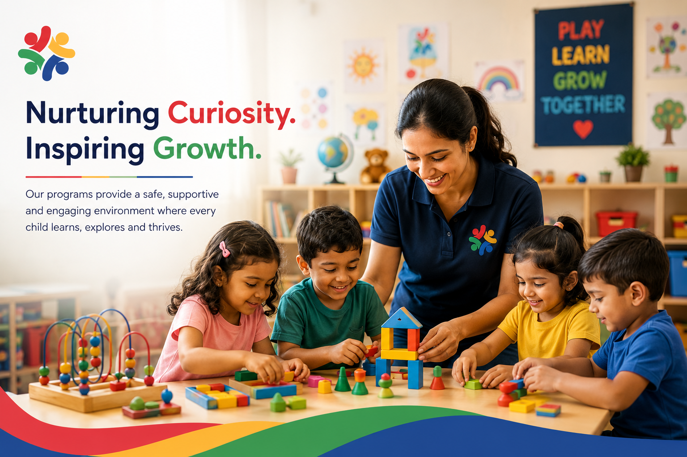

Lambs
A nurturing environment focused on comfort, bonding, sensory exploration, and early developmental milestones.
Explore Environment →At Method Child Development Center, our age-appropriate programs provide children with a safe, nurturing, and engaging environment where they can learn, grow, and thrive through meaningful experiences.

Our classrooms are thoughtfully designed to encourage curiosity, creativity, and confidence while providing a safe and nurturing environment where every child feels valued and supported.
Clean, secure spaces designed with children's safety in mind.
Caring educators who support every child's learning journey.
Safe outdoor spaces for exploration, movement, and fun.
Interactive activities that inspire creativity and discovery.
Our natural playground was featured by Nature Explore: read the article.
When families tour Method with Center Director Martinique McLaughlin (Ms. Mac), they see firsthand how our intentional learning spaces spark joyful curiosity. Guided by the Creative Curriculum and Teaching Strategies framework, our educators weave literacy, math, scientific exploration, and creative expression into engaging daily routines.
Play-Based, Whole-Child Learning
Daily Focus on Kindergarten Readiness
Experienced Early Childhood Educators
Family-Focused: Connecting School to Home

Each program is thoughtfully designed to meet children where they are, supporting their whole-child development through age-appropriate learning experiences.

A nurturing environment focused on comfort, bonding, sensory exploration, and early developmental milestones.
Explore Environment →
Encouraging independence through play, language development, movement, and hands-on sensory exploration.
Explore Environment →
Active, hands-on learning experiences that build self-confidence, communication skills, and cooperative social play.
Explore Environment →
Inspiring curious learners through foundational early literacy, math reasoning, creative arts, and joyful problem-solving.
Explore Environment →
Building school confidence and kindergarten readiness through our Wake County Smart Start NC Pre-K partnership, shared lesson plans, and purposeful play.
View Enrollment →
Providing a safe, supportive before and after school community with homework guidance, outdoor recreation, and enriching activities.
Inquire Today →Our daily schedule provides children with a healthy balance of learning, creative play, outdoor activities, rest, and social interaction.
Children arrive, settle into the classroom, and begin their day with free exploration.
Stories, songs, calendar activities, and group discussions begin the learning day.
Hands-on activities including literacy, math, science, art, and sensory play.
Children head outside for 30 minutes of energetic gross motor play, fresh air, and nature discovery (weather permitting).
Healthy meals followed by quiet rest to recharge for the afternoon.
Music, crafts, dramatic play, and collaborative small-group learning experiences.
A second 30-minute outdoor session for active games, sandbox play, and teamwork with peers.
Children reflect on their day and enjoy closing activities before heading home with their families.
Our lesson planning is guided by the Creative Curriculum and Teaching Strategies objectives, supporting whole-child development through joyful, intentional experiences.
Developing positive relationships, self-regulation, empathy, sharing, and confidence in group settings.
Strengthening fine motor precision, gross motor coordination, balance, and lifelong health and safety habits.
Building rich expressive vocabulary, conversational confidence, comprehension, and active listening skills.
Nurturing phonemic awareness, letter recognition, rhyming, story comprehension, and emergent writing.
Exploring number concepts, spatial relationships, patterns, measurement, sorting, and early geometry.
Investigating the physical world, living organisms, weather, sensory experiments, and intuitive digital tools.
Understanding diverse family structures, community roles, cultural appreciation, and caring for our environment.
Fostering creative self-expression through painting, music, drama, movement, and three-dimensional sculpting.
Cultivating curiosity, sustained attention, flexible problem-solving, memory recall, and symbolic thinking.
Honoring each child's home language while scaffolding receptive and expressive English fluency daily.
Answers to what prospective and current parents ask most about programs, daily care, and learning at Method.
To ensure your child is comfortable, safe, and ready for joyful play and learning, please provide:
Additional details are available in our official Parent Handbook (provided to all families upon enrollment).
Yes! Method has our own dedicated on-staff cook who prepares fresh, wholesome hot lunches, breakfasts, and nutritious afternoon snacks on-site daily meeting all USDA guidelines.
Weekly Menus: Our weekly menus are posted on the bulletin board in the entrance hall, outside each classroom, and in the kitchen.
Food Allergies & Dietary Restrictions: Children with physician-documented food allergies or dietary restrictions are listed in each classroom and in the kitchen. For child safety, alternate food and drink are served exclusively to children with documented medical notes.
To keep our learning community safe and healthy, ill children must stay home. If a child becomes ill while at the Center, he/she will be isolated comfortably from other children, and the parent or emergency contact will be promptly notified for immediate pickup.
Children must be picked up and stay home for the following conditions:
For return-to-school requirements and the complete 10-point illness policy, please consult our official Parent Handbook provided upon enrollment.
Tuition is billed on the 1st of every month and needs to be paid in full by the 15th of each month. Flexible payment options and tuition schedules are outlined in our enrollment agreement and Tuition Page.
Yes! Method is a 501(c)(3) nonprofit facility. When we receive community donations and funding to assist with scholarships, we offer financial assistance to families. When additional funding is unavailable, scholarships cannot be offered. We also accept state childcare subsidies and participate in state-supported programs including Wake 3s and NC Pre-K.
No, parents are not granted remote access to classroom cameras for safety and privacy reasons. The Wi-Fi network across our Center is strictly secured, and we do not authorize external streaming to prevent others from viewing children in the classroom who are not their own.
No, Method does not provide transportation. Families drop off and pick up their children directly at our center located at 900 Trailwood Drive in Raleigh.
Yes! We warmly encourage prospective parents to schedule a tour to walk our classrooms, explore our natural outdoor spaces, and meet our teachers. Enrolled families always enjoy an open-door policy and are welcome to participate in center activities and FIG parent events.
Children play outdoors twice a day, weather permitting. Each classroom schedule has 30 minutes built in the morning and 30 minutes in the afternoon for outdoor play and active gross motor recreation.
Inclement Weather & State Weather Guidelines: If we have inclement weather or weather warnings, we adjust outdoor play as needed. We follow the state-provided Child Care Weather Watch guide that defines temperatures that are too cold or too hot for safe outdoor play.
When outside, children enjoy our certified natural outdoor learning environment and playground featuring shade trees, grass, sensory gardens, pathways, and natural play structures designed to stimulate healthy physical development and scientific discovery.
We use Teaching Strategies and the Creative Curriculum to prepare our children for Kindergarten every single day:
We'd love to welcome your family. Schedule a tour and discover how Method Child Development Center helps children learn, grow, and thrive.